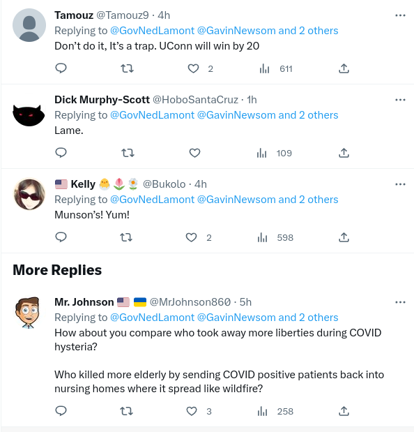
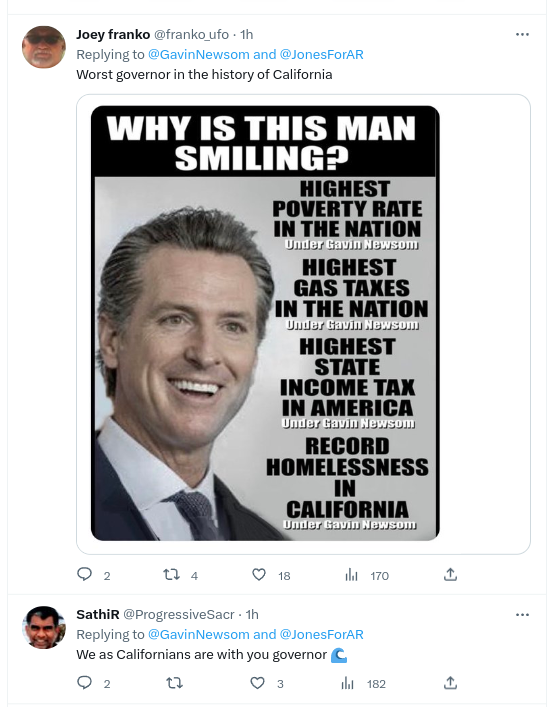
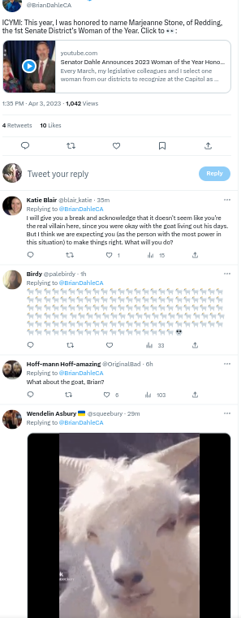
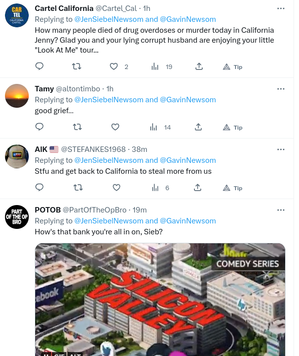

Twitter's ranking algorithm is beyond flawed
Twitter's ranking algorithm is irretrievably flawed when it comes to controversial topics like politics. That algorithm determines which tweets you see and in which order, and it consistently promotes low quality tweets while usually suppressing higher quality tweets.
For a tangible example, consider this from GovNedLamont/status/1643011987356393472:

That's on a cutesy thread where the governors of CT and CA wager on a sports game. Whether you agree with the last tweet in the image or not, you have to admit that it's higher quality than the tweets above. Yet, the Twitter ranking algorithm thinks the first three are better: it calls those "HighQuality" and the last tweet "LowQuality". In fact, the Twitter algorithm hid the last tweet: I had to click the 'Show more replies' link to see it.
Does that make any sense? Shouldn't the algorithm have ranked the last tweet above the other three?
If you look at reply threads you'll see this over and over. For instance, here are two "HighQuality" replies on GavinNewsom/status/1643066244982030339:

The first tweet has nothing to do with the Newsom tweet it's a reply to and I've seen that image dozens of times before. The last tweet is from a pro-Newsom activist and "human bot": he appears to be a real person but he never really says anything. Despite that, his replies are invariably near the top of Newsom's replies.
Here's another case from BrianDahleCA/status/1642989102051229696 (BrianDahleCA/status/1641590521297780736 is similar but has 100s of replies):

For an explanation, see "Adults led a pet goat to slaughter to teach girl a lesson. All she learned was cruelty | Opinion" ("The only authority figure who comes off looking decent in this whole affair is Republican state Sen. Brian Dahle, who bought the goat at auction and then agreed to let it live"). Whatever the facts of that matter, there are much more important things to hold Dahle accountable over. Yet, Twitter is preventing that by elevating goat-related replies above all others. That's like elevating dozens of "me too" comments above those with actual content.
To be clear, I only use Twitter to try to hold leaders accountable. If you use Twitter to discuss BTS or similar the ranking algorithm might work OK. The Youtube recommendation algorithm works fairly well for music and, even though Google is much (much, much) more technically competent than Twitter, Twitter might work OK if you're only there for music or sports.
However, politics and other controversial topics are a different beast. Twitter elevates those who tell others what they want to hear and who avoid challenging others. However, those who are in the habit of showing others wrong are likely to be blocked and reported, resulting in Twitter silencing them. Even Elon Musk admitted that blocks can be used to silence dissent, but, obviously, he hasn't done anything about that.
4/4/23: These are from the "AbusiveQuality" section on JenSiebelNewsom/status/1643446471348584448. That's the doubleplus censored section after 'show more replies'.
Apparently Twitter considers "good grief" to be a forbidden swear. Anyone who's so emotionally fragile that they need to be protected from such language should be institutionalized.
